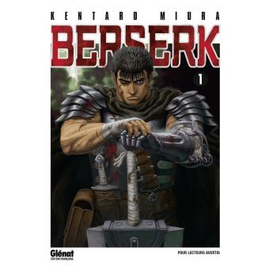
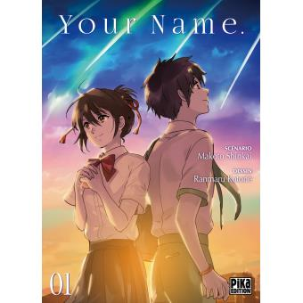

Les Seinens
Dans le Seinen, l’histoire et l’intrigue du manga est plus mature et cible donc un public plus adulte. On n’y retrouve pas de pouvoirs (enfin rarement) et souvent le thème abordé est très mystérieux voir sombre.

Berserk est sûrement l'un des seinen les plus connus à ce jour. L'ambiance sombre de l'oeuvre nous plonge dans un monde rempli de désespoir. Nous allons suivre l'histoire de Gutz, un épeiste animé par la vengeance bien décidé à éradiquer le mal dans son monde peu importe le prix..

Your Name nous raconte l'histoire de Mitsuha, une jeune fille réveuse de quitter sa famille traditionnelle afin de découvrir le monde extérieur. C'est sans compter sur l'aide de Taki, un jeune lycéen de Tokyo, qui "l'accompagnera" afin de réaliser son rêve..